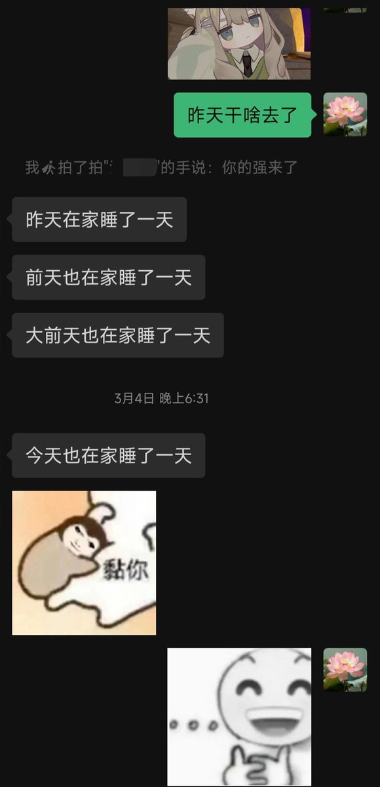

我始终坚信真心待人是可以交到挚友的，前提是真心要用在对的人身上。
她是我在初中的时候在网上认的妹妹，到现在已经有八年之久了。我们之间没有血缘关系，但她始终是我的挚友，也是我重要的家人。我们之间的感情从未变淡过。
我总是能想起最纯真的那个年纪，大家都是那么的单纯，友善，那个时候真的能认识到很多朋友。至少在那段时间我遇到的人大多是这样。
在经历了那么多风雨过后，或许我的内心早已千疮百孔，但是在她面前，我永远都是初见时的那个纯真的自己，她在我眼里也一样。我们之间并没有总是频繁联系，我们从来都不需要靠这个来维持感情，我们从未变过，依旧是对方眼中的那个自己，这就足够了。（为什么感觉写得很乱）
她是我在初中的时候在网上认的妹妹，到现在已经有八年之久了。我们之间没有血缘关系，但她始终是我的挚友，也是我重要的家人。我们之间的感情从未变淡过。
我总是能想起最纯真的那个年纪，大家都是那么的单纯，友善，那个时候真的能认识到很多朋友。至少在那段时间我遇到的人大多是这样。
在经历了那么多风雨过后，或许我的内心早已千疮百孔，但是在她面前，我永远都是初见时的那个纯真的自己，她在我眼里也一样。我们之间并没有总是频繁联系，我们从来都不需要靠这个来维持感情，我们从未变过，依旧是对方眼中的那个自己，这就足够了。（为什么感觉写得很乱）
